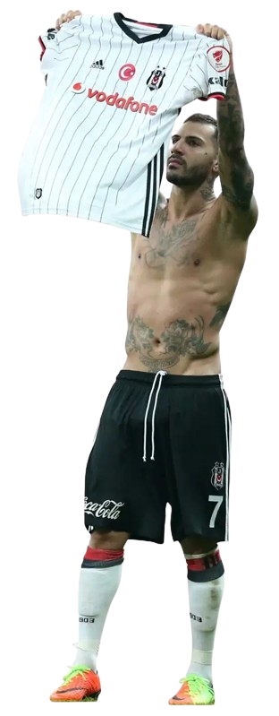
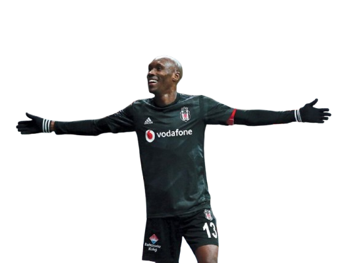
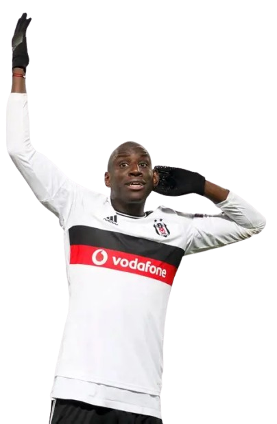
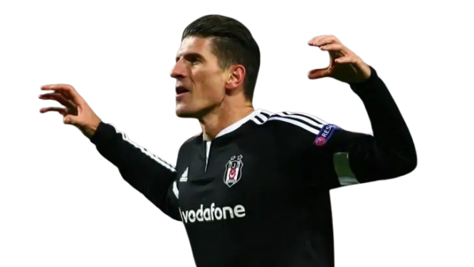
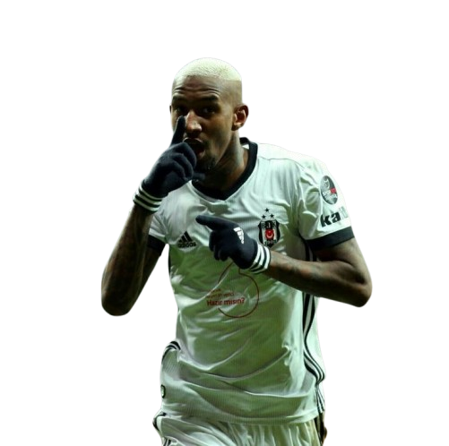
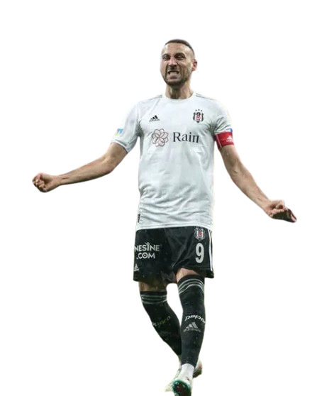
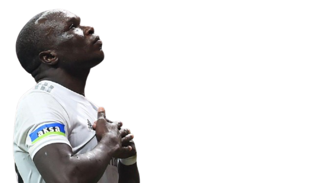

Ricardo Quaresma – Portugalský kouzelník a „Çingene“ (2010–2012, 2015–2019)
Ricardo Quaresma je jedním z nejvýraznějších hráčů a největších miláčků fanoušků v moderní historii Beşiktaş JK. Do Istanbulu poprvé přestoupil v létě roku 2010 z Interu Milán a okamžitě si získal srdce celého stadionu svou nespoutanou technikou, odvahou v soubojích jeden na jednoho i ikonickým číslem 7 na zádech. Po tříleté pauze se v roce 2015 do černobílého dresu triumfálně vrátil a zažil v něm nejlepší období své klubové kariéry. Celkem za Beşiktaş odehrál 227 soutěžních zápasů, ve kterých nastřílel 38 gólů a přidal neuvěřitelných 77 asistencí, čímž se zařadil mezi nejproduktivnější cizince v dějinách klubu. Fanoušci skupiny Çarşı mu na stadionu Tüpraş s obrovskou láskou a hrdostí přezdívali „Çingene“ (Cikán), což sám Quaresma s radostí přijal jako symbol své svobodné povahy, vášně a pouličního fotbalového umění. Proslavil se především svými nebránitelnými centry a střelami vnějším nártem (tzv. trivela), kterými pravidelně přiváděl obránce soupeřů k šílenství. Během svého působení v Istanbulu pomohl klubu vybojovat dva mistrovské tituly v Süper Lig (v sezónách 2015/16 a 2016/17), jeden Turecký pohár (2011) a byl také klíčovou postavou při historickém tažení Ligou mistrů v sezóně 2017/18, kdy Beşiktaş jako první turecký tým v historii vyhrál základní skupinu bez jediné porážky.


Atiba Hutchinson – Největší zahraniční legenda a kapitán (2013–2023)
Atiba Hutchinson je nejlépe hodnoceným zahraničním fotbalistou v celé historii Beşiktaş JK a jedním z nejuznávanějších kapitánů, kteří kdy oblékli černobílý dres. Do Istanbulu přišel v létě roku 2013 z nizozemského PSV Eindhoven původně jako nenápadná posila, ale během deseti nezapomenutelných sezón se stal naprostým symbolem spolehlivosti, profesionality a oddanosti klubu. S číslem 13 na zádech odehrál za Beşiktaş neuvěřitelných 334 soutěžních zápasů, v nichž vstřelil 27 gólů a přidal 37 asistencí, čímž překonal všechny rekordy zahraničních hráčů v dějinách klubu. Fanoušci na stadionu Tüpraş mu s obdivem přezdívali „Ahtapot“ (Chobotnice), protože dokázal svýma dlouhýma nohama pokrýt obrovský prostor uprostřed zálohy a odebírat soupeřům míče s neuvěřitelným klidem. Jako dlouholetý lídr kabiny dovedl Černé orly ke třem mistrovským titulům v Süper Lig (2016, 2017, 2021), jednomu Tureckému poháru (2021) i jednomu Tureckému superpoháru (2021) a zapsal se do srdcí příznivců jako vzor skromnosti a klubové věrnosti.
Demba Ba – Senegalský kanonýr a legendární stadionová píseň (2014–2015, 2017)
Demba Ba zanechal v Beşiktaş JK nesmazatelnou stopu, přestože v Istanbulu nepůsobil tak dlouho jako jiné klubové legendy. Do klubu přestoupil v létě roku 2014 z londýnské Chelsea a hned ve své první sezóně se stal nezastavitelným střelcem s číslem 9 na zádech. V ročníku 2014/15 nastřílel v dresu Černých orlů neuvěřitelných 27 gólů ve 44 soutěžních zápasech, čímž vytvořil tehdejší klubový rekord v počtu branek zahraničního hráče za jedinou sezónu. Fanoušci ho doslova zbožňovali nejen pro jeho chladnokrevné zakončení a důležité trefy v Evropské lize proti Tottenhamu či Liverpoolu, ale také proto, že pro něj vytvořili vlastní kultovní stadionovou píseň na melodii hitu „Get Lucky“. Pokaždé, když Demba Ba skóroval nebo nastoupil na hřiště, rozezněla se stadionem tahle chytlavá hudba a desítky tisíc fanoušků Çarşı společně skákaly a zpívaly jeho jméno. Na začátku roku 2017 se do Beşiktaşe ještě vrátil na hostování a pomohl týmu dotáhnout cestu za mistrovským titulem v Süper Lig (2016/17), čímž svou bilanci v černobílém dresu uzavřel na celkových 46 zápasech a 28 gólech.


Mario Gómez – Německý kanonýr a král střelců mistrovské sezóny (2015–2016)
Mario Gómez prožil v dresu Beşiktaş JK sice jedinou sezónu, ale zapsal se do historie klubu zlatým písmem jako jeden z nejefektivnějších útočníků všech dob. Do Istanbulu přišel v létě roku 2015 na hostování z italské Fiorentiny s cílem restartovat svou kariéru a s číslem 33 na zádech předvedl naprosto dominantní ročník. Ve 41 soutěžních zápasech nastřílel neuvěřitelných 28 gólů (z toho 26 přímo v lize), čímž se stal nejlepším střelcem celé Süper Lig a zároveň překonal klubový rekord v počtu branek zahraničního hráče za jednu sezónu. Díky svému zabijáckému instinktu v pokutovém území, hře hlavou a chladnokrevnému zakončení si od fanoušků vysloužil přezdívku „Super Mario“ a dovedl Černé orly k vytouženému mistrovskému titulu v sezóně 2015/16 – prvnímu po sedmi letech čekání. Svými výkony v Beşiktaşe si navíc znovu vybojoval místo v německé reprezentaci pro Euro 2016 a dodnes patří mezi nejmilovanější útočníky, kteří kdy na stadionu Tüpraş hráli.
Anderson Talisca – Brazilský mistr přímých kopů a střel z dálky (2016–2018)
Anderson Talisca patřil během svého dvouletého působení v Beşiktaş JK mezi nejnebezpečnější ofenzivní záložníky v celé Evropě. Do Istanbulu přišel v létě roku 2016 na dvouleté hostování z portugalské Benficy Lisabon a okamžitě uhranul fanoušky svou vytáhlou postavou, elegancí na míči a především neuvěřitelně tvrdou a přesnou levou nohou. S číslem 94 na zádech odehrál za Černé orly celkem 80 soutěžních zápasů, ve kterých nastřílel parádních 37 gólů a přidal 14 asistencí. Proslul jako neomylný exekutor přímých kopů a střel ze střední vzdálenosti, kterými pravidelně rozhodoval klíčové ligové bitvy i zápasy evropských pohárů – nezapomenutelný byl například jeho gól přímo z přímého kopu na hřišti Benficy v Lize mistrů. Hned ve své první sezóně 2016/17 pomohl Beşiktaşu vybojovat mistrovský titul v Süper Lig a v následujícím ročníku byl jedním z hlavních tahounů týmu při historickém postupu ze skupiny Ligy mistrů bez jediné porážky.


Cenk Tosun – „Tosun Paşa“ a rekordní přestup do Premier League (2014–2018, 2021, 2022–2024)
Cenk Tosun je jedním z nejvýznamnějších tureckých útočníků v moderní historii Beşiktaş JK a hráčem, který se do dějin klubu zapsal hned ve třech různých obdobích. Do Istanbulu poprvé přestoupil v létě roku 2014 z Gaziantepsporu a postupně se vypracoval v hlavního kanonýra týmu s číslem 23 (později také 9) na zádech. Za Černé orly odehrál celkem 227 soutěžních zápasů, v nichž nastřílel úctyhodných 96 gólů a přidal 30 asistencí, čímž se zařadil mezi nejlepší střelce klubu v 21. století. Fanoušci na stadionu Tüpraş mu přezdívali „Tosun Paşa“ a zbožňovali jeho bojovnost, sílu v osobních soubojích i přesnou koncovku oběma nohama i hlavou. S Beşiktaşem vybojoval tři mistrovské tituly v Süper Lig (2016, 2017, 2021) i Turecký pohár (2021, 2024) a výrazně zazářil v Lize mistrů v sezóně 2017/18, kde svými góly pomohl týmu vyhrát základní skupinu bez jediné porážky. V lednu 2018 navíc přestoupil do anglického Evertonu za přibližně 22,5 milionu eur, což se stalo tehdejším historicky nejdražším prodejem hráče z turecké ligy do zahraničí.
Vincent Aboubakar – Kamerunský kanonýr tří mistrovských ér (2016–2017, 2020–2021, 2023–2024)
Vincent Aboubakar patří mezi nejvýraznější a nejúspěšnější útočníky moderní historie Beşiktaş JK, kde během tří různých angažmá zanechal hlubokou stopu. Do Istanbulu poprvé přišel v létě roku 2016 na hostování z portugalského FC Porto a okamžitě si fanoušky získal svou fyzickou silou, dravostí i schopností rozhodovat velké zápasy v Evropě i v lize. Za Černé orly odehrál napříč všemi třemi obdobími celkem 117 soutěžních zápasů, ve kterých nastřílel úctyhodných 60 gólů a přidal 14 asistencí, čímž udržel fantastický průměr více než půl gólu na zápas. S číslem 9 (a později 10) na zádech se stal klíčovým střelcem při zisku mistrovských titulů v Süper Lig v sezónách 2016/17 a 2020/21, přičemž v ročníku 2020/21 pomohl klubu vybojovat i Turecký pohár a slavný ligový double. Fanoušci na stadionu Tüpraş si ho zamilovali také pro jeho emotivní oslavy, důležité trefy v Lize mistrů a Evropské lize i legendární střeleckou formu během svého návratu v roce 2023, kdy táhl ofenzivu týmu svými nechytatelnými zakončeními.
